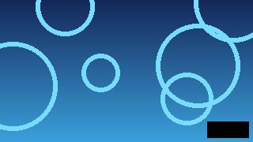
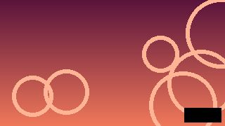

Streams
P
L
S
U

1:02:33

LIVE
412 viewers
Past broadcasts
An error occurred while loading this video.
This video is for viewers 18 and over.
Start watching
Following 1,204 channels.
Join the Streams community!
Sign up